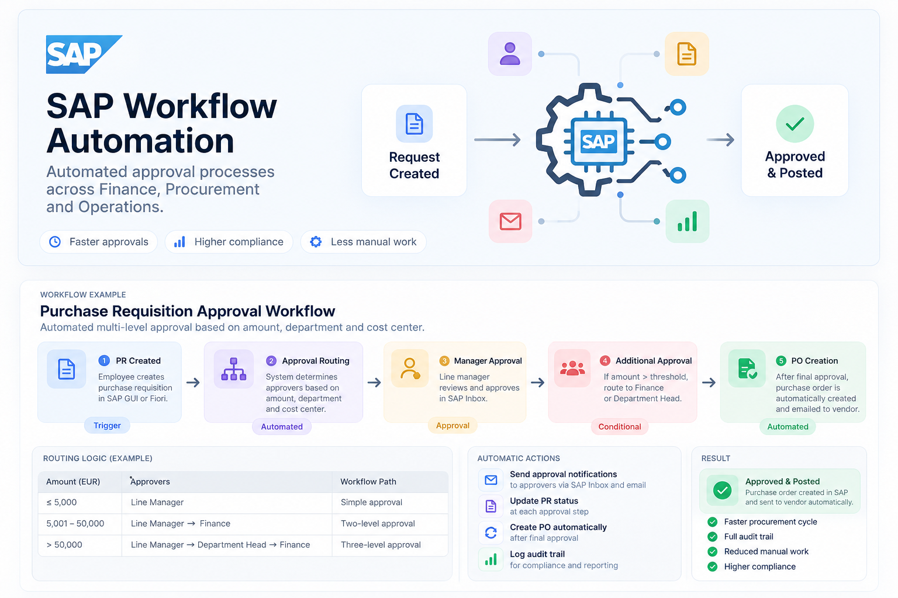

From request to posted purchase order
Without a workflow, a purchase requisition moves by email: someone works out who needs to sign off, chases them, and keys the purchase order in by hand afterwards. Approvals stall, the wrong people get asked, and there is no single record of who approved what.
This workflow takes over from the moment a requisition is created. It decides the approval path from the request itself, sends each task to the right inbox, and creates the purchase order once the last approval is in.

How a request moves through the workflow
- 1
PR created Trigger
An employee creates a purchase requisition in SAP GUI or Fiori. Saving it starts the workflow; there is nothing extra to submit.
- 2
Approval routing Automated
The workflow reads the amount, department and cost center and works out who has to approve, using the routing rules below.
- 3
Manager approval Approval
The line manager gets the task in SAP Inbox, reviews the request and approves or rejects it. Every request passes through this step.
- 4
Additional approval Conditional
If the amount is above the threshold, the request continues to Finance, and for the largest amounts to the Department Head first. Small requests skip this step entirely.
- 5
PO creation Automated
After the final approval, the purchase order is created in SAP automatically and emailed to the vendor.
Who approves what
The approval path depends on the amount, so routine purchases go through quickly and large ones get more scrutiny.
| Amount (EUR) | Approvers | Workflow path |
|---|---|---|
| ≤ 5,000 | Line Manager | Simple approval |
| 5,001 – 50,000 | Line ManagerFinance | Two-level approval |
| > 50,000 | Line ManagerDepartment HeadFinance | Three-level approval |
What happens without anyone clicking
Approval notifications
Approvers are notified through SAP Inbox and email as soon as a task reaches them.
PR status updates
The requisition's status is updated at each approval step, so the requester can see where it is.
Automatic PO creation
The purchase order is created after the final approval, with no manual data entry.
Audit trail
Every decision is logged with who approved and when, for compliance and reporting.
Approved and posted
The end state is a purchase order in SAP that has already been sent to the vendor, backed by a complete approval history.
With this workflow we achieve a faster procurement cycle, because requests go straight to the right approver instead of waiting in someone's email. Requesters and Finance do less manual work, since nobody has to work out the approval path or key in the purchase order. And compliance improves: every request follows the same rules for its amount, and every decision is recorded in a full audit trail.